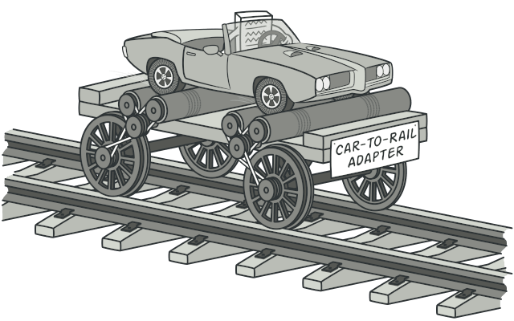

Adapter
The structural design pattern "Adapter," also known as "Wrapper," is used to enable classes with incompatible interfaces to work together. It acts as a converter, adapting the interface of an existing class to the interface expected by a client. This way, classes that couldn't interact directly can collaborate easily.
Real-World Analogy
Imagine you have a favorite music playlist on your phone, but the stereo system in your car only accepts CDs. The problem is that the two devices (your phone and the car stereo) don't connect directly because they use different formats.
To solve this, you use a special device, like a Bluetooth transmitter, that can bridge the gap between your phone and the stereo. This device takes the music from your phone and converts it into a format that the car stereo can understand and play through its speakers.
In this analogy, the Bluetooth transmitter acts like the Adapter pattern in software design. It allows two incompatible systems to work together seamlessly.